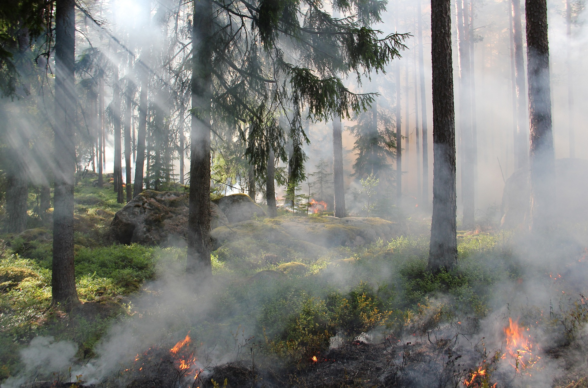
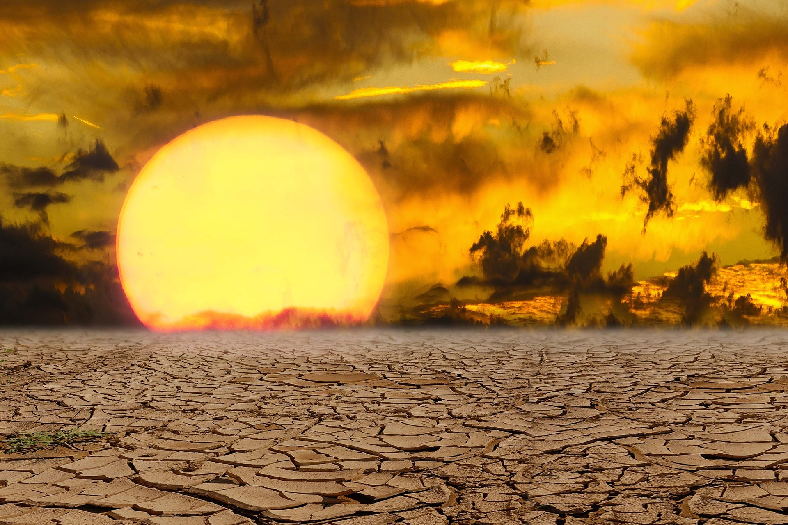

Background Story

Wildfires Tends
Wildfires have significantly grew over the past several decades. Areas burned in wildfires increased particularly sharply in the western United States, where the annual average area burned in large forest fires grew by about 1,200 percent between the 1970s and the 2000s.

Climate Change
Climate change includes warming weather, megadroughts, and heat waves, they play crucial roles in wildfire formation.

Human Activitie
Human activities are key fact projects wildfire. Wildfires caused by unplanned human-related ignitions increased by 51% over the two past decades.